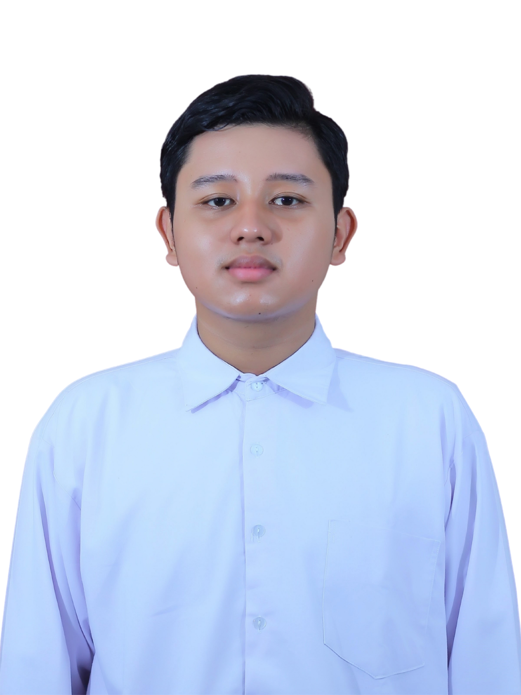

Halo, saya Surya Maulana Nugroho — membangun infrastruktur jaringan yang andal dan terpantau.
Mahasiswa Teknik Telekomunikasi di Telkom University dengan fokus pada computer networking, system administration, dan network monitoring.

Sedikit cerita tentang saya & keahlian yang saya pakai
Saya mahasiswa Teknik Telekomunikasi di Telkom University dengan minat besar pada computer networking, system administration, dan network monitoring. Saya punya pengalaman langsung di bidang networking, manajemen server, dan operasional infrastruktur lewat peran sebagai asisten praktikum, mentor, dan staf infrastruktur.
Saat ini saya sedang membangun karier di bidang networking dan IT infrastructure sambil terus mengasah kemampuan teknis dan problem-solving.
Highlight pekerjaan & proyek teknis yang pernah saya kerjakan
Desain & Simulasi Quality of Service
Merancang, mensimulasikan, dan menganalisis QoS pada sistem jaringan tersentralisasi sebagai asisten praktikum di Adaptive Network Laboratory.
Observability & Monitoring Server
Membangun dashboard monitoring dan alert menggunakan Grafana & Prometheus, serta log management dengan ELK Stack untuk kebutuhan Adaptive Training.
Konfigurasi DNS & Web Server
Mengonfigurasi layanan jaringan termasuk DNS server dan web server (Apache2 & NGINX) dengan dukungan HTTPS, disertai administrasi Linux dan scripting Bash.
Perancangan Infrastruktur Jaringan
Mengajarkan dan menerapkan VLSM subnetting, routing statis & dinamis, VLAN, serta Inter-VLAN routing sebagai mentor di Netschool.